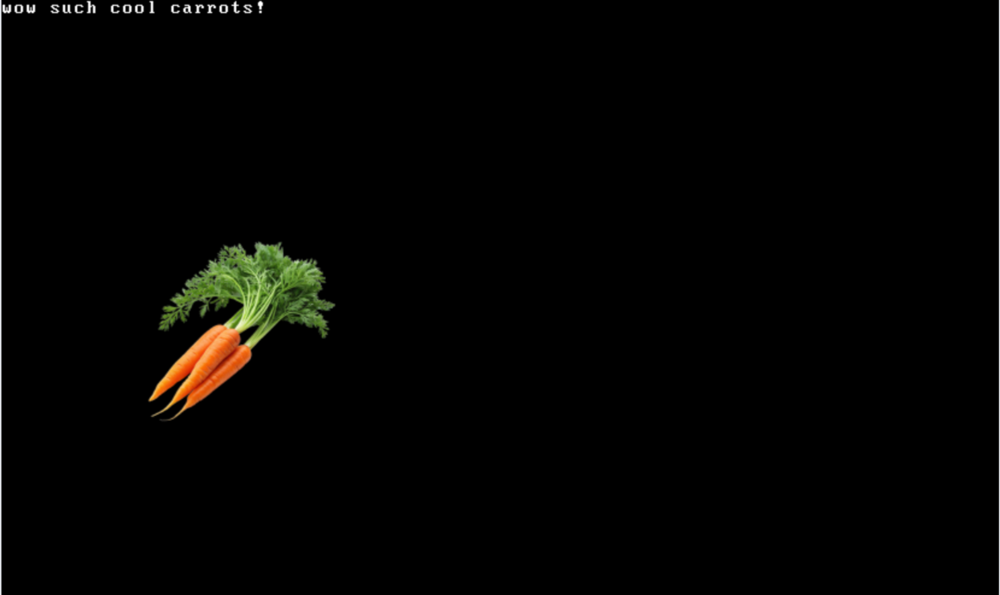
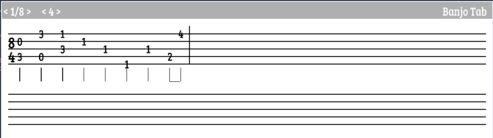
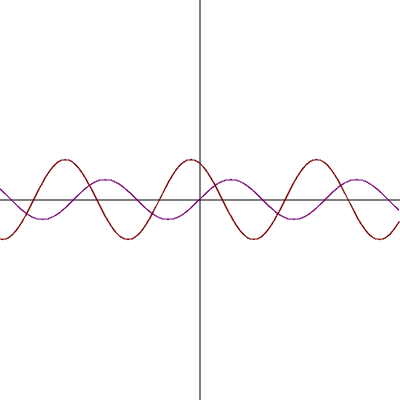

Hi, I'm Ishaan!
I'm a full-time student at Oregon State University, majoring in Electrical and
Computer Engineering, and a part-time software developer. I've worked with
C, C++ and Python and have some experience in web development
(HTML, CSS, and Javascript). Outside of programming, I spend
my free time breathing new life into technology that would have become e-waste.
experience
Summer 2026
- Helped set up data center infrastructure
- Set up and configured cluster computing using Slurm
- Created web-based frontend for Slurm to track running processes
Summer 2024
- Assisted with the training of a AI model that analyzes volleyball matches
- Created the training data for an AI model that analyzes football games
frc #9634: zero tolerance
Winter 2024
- Wrote all the computer vision needed the autonomous section of competition
- Assisted in the building and wiring of the robot
Summer 2022 - Summer 2023
- Wrote documentation on legacy code and poorly documented existing code
- Worked on computer vision responsible for the autonomous section of competitions
-
Wrote tests for superstructure collision, which kept track of the physical locations of the
robot's arm and shooting mechanism to avoid causing any internal damage.
- Assisted in the wiring of the robot
projects
Below is a handful of the things I've written, check out the rest of my projects on
Github and
Codeberg
BSD 3-Clause
a single-header graphics library that renders text in cells like a terminal but also supports direct pixel manipulation, like a TUI crossed with a GUI
- Written in C
- Ncurses-like printing functions
- Allows the choice between multiple graphics frontends (SDL, Raylib, X11)
- Supports rendering of custom emoji-like glyphs

Apache License v2.0
A compiler for a statically typed programming language that generated x86_64 assembly
- Written in C
-
Used a mix between
Recursive Descent
and
Pratt Parsing
- Can integrate with C libraries (such as raylib)
- Able to make system calls to the Linux kernel
- Supports namespacing and file inclusion, can automatically search through the current directory and subdirectories for included files
GPL v3.0
An app built for Linux and MacOS to create tablature for banjos
- Written in C++
- Uses SFML for the visuals
- Used the osxcross toolchain to cross-compile for MacOS

Unlicense
A script that converts a spec file describing the image to an svg
- Written in Lua
- Calculates the derivative of inputted functions to accurately plot them
- Written to optimize my workflow when it comes to taking notes on my computer in my math classes
